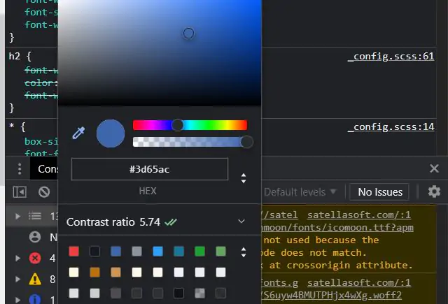
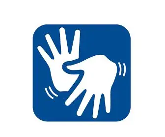

Ferramentas de Acessibilidade
Selecione e descarregue as extensões para personalizar a sua experiência na web.
Leitor de Voz Pro
O que faz: Converte textos em áudio com vozes naturais. Essencial para utilizadores cegos ou com dislexia.
Download

Super Contraste
O que faz: Aplica filtros de cores invertidas ou monocromáticas para facilitar a leitura em casos de baixa visão.
Download
NavTeclado
O que faz: Otimiza a navegação via tecla TAB, criando focos visuais claros para utilizadores com limitações motoras.
Download

Lupa Digital HD
O que faz: Amplia partes específicas do ecrã sem perder a qualidade da imagem ou desformatar o layout do site.
Download

Libras Connect
O que faz: Traduz automaticamente conteúdos de texto e legendas para a Língua Brasileira de Sinais via avatar 3D.
Download

Foco Total
O que faz: Bloqueia elementos de distração e pop-ups, ajudando utilizadores com TDAH a concentrarem-se no conteúdo.
Download